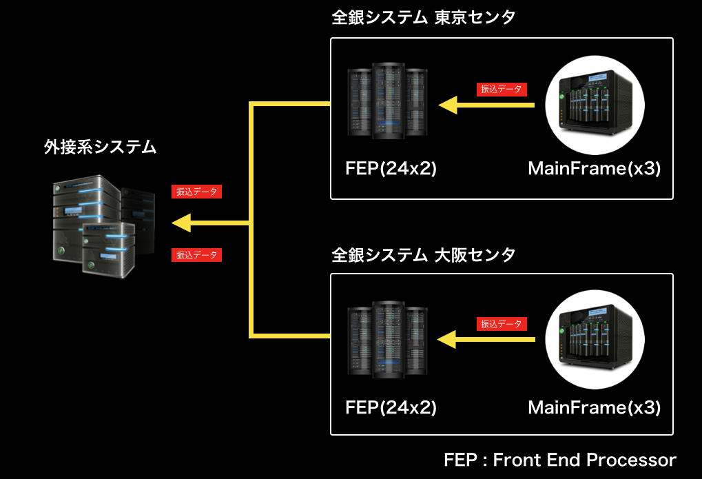
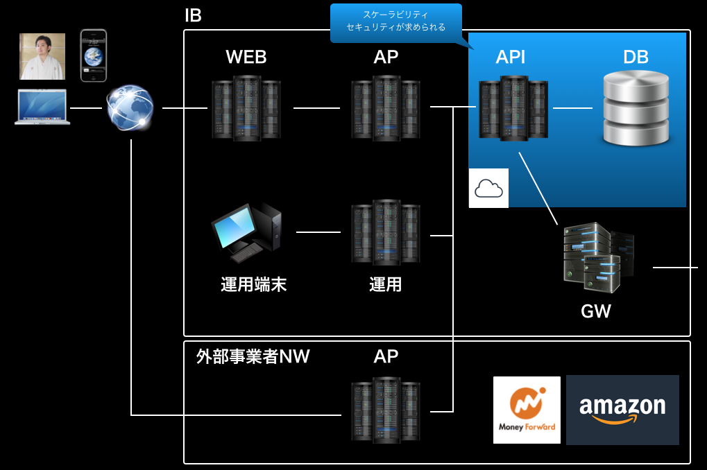
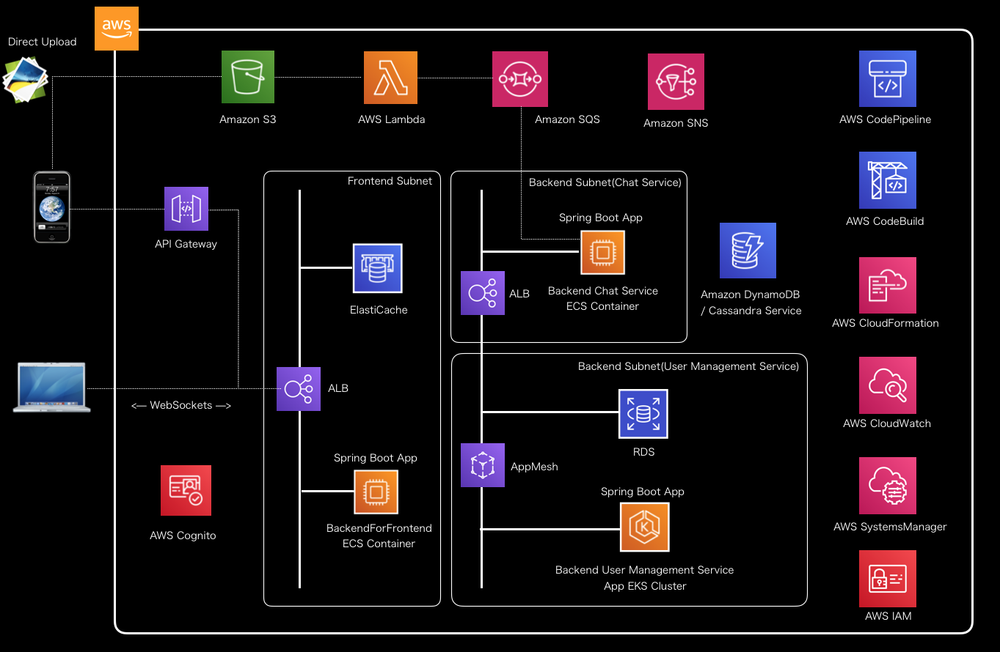

CloudNative & Micro Service
VS
On Premise & Monolitic
UseCase : オープンAPI

銀行業界におけるオープンAPI
押し寄せる金融業界におけるオープンAPI化の波
何故APIを公開？どうすればよい？マイクロサービス？
まず既存の仕組みを知ろう
レガシー&オンプレミス&モノリスで形成された世界最高峰の日本の決済システム
決済の基本となる「振込」が発生したとき、
どのようなデータが、いつ、どのように動くのか？
インターネットバンキング(IB)で振込を行うときの処理の挙動をみてみよう。
塾長とそのフレンド2名に、お金の貸借があり、それぞれがIBを使って支払う。
「振込」が行われるシステムの全体像
銀行の代表的なシステム構成

IBのシステム構成

IBのモノリシックアプリケーション機能構成

IBにおける振込のユースケース
ユースケースを実現するIBの振込関連処理

IBを使った振込処理の流れ(IB→勘定系システム)

IBを使った振込処理の流れ(勘定系システム→RC)
IBを使った振込処理の流れ(RC→全銀)

全銀におけるネッティング処理
全銀におけるネッティング処理
全銀におけるネッティング処理
IBを使った振込処理の流れ(全銀→振込先対象の銀行(非仕向先銀行))

IBにおける振込におけるポイント・補足事項
- 別の銀行向けの振込は簡単にロールバックできない(トランザクション自体を消せない。「組み戻し」するには別途手数料。)
- 勘定系システムは運転時間が決まっている。停止時間帯はIBのDBでデータをため込んで、営業日のオンライン時間になったら時間起動バッチで処理が実行される。 (2018年10月からモアタイム(営業日の15:30以降も処理を受けるシステム)ができたので、停止時間は各銀行次第)
- 個人の預金データの元データ(元帳)は勘定系システムにある。IBのDBでは、勘定系システムが停止している時間帯のデータ取得(金融機関情報、支店情報等)に加えて、トランザクションの記録が主な用途。
- 一つのシステムで業務トランザクションが完結するわけではない。各システムでの連携は、システムダウンを想定し、信頼性・可用性を高めたシステム構成でデータを永続化し、トランザクションデータを連携する。 各システムのトランザクションデータは結果整合性により担保される(そのリスクは銀行が負っている)。
- キャッシュレス決済等、同じ資金決済データでも、一件あたりのトランザクションの金額が大きい(ミッションクリティカルなシステムとしては国内最高レベル)。1件でも不具合は許されない。 なお、基本的に決済は種類によって適用する法律が決まっている(資金決済法、銀行法、割賦販売法、外国為替に関する法律)ため、クラウド化を検討するにもシステム構成に注意が必要である。
参考資料
なぜ銀行業界でオープンAPIの公開が進められているか？
なぜ銀行業界でオープンAPIの公開が進められているか？
- オープンAPIは、他の事業者等とのオープンネットワーク上でのセキュアなデータ連携を可能とする技術であり、他の事業者等と金融機関が協働して、それぞれの保有する情報やサービスを組み合わせ、 オープン・イノベーションを実現していくためのキー・テクノロジーの一つと位置づけられ、世界標準準拠・最高レベルの金融サービス・テクノロジ普及を推進(金融庁等政府側の視点)。
- 伝統的なホールセール型ビジネス、リテール分野の衰退に伴い、新たな収益源としての手数料ビジネスの拡充を推進(銀行側の視点)。また、他業種サービスとの連携に関する、従来のセキュリティ課題の解消。
- 新規ビジネスと金融サービスを融合した新しいサービス創出、最新テクノロジを用いた既存データの活用を目論み、ビジネスチャンスを拡大(Fintech企業や従来システム業界の視点)。
実現には以下のようなシステム構成を
このようなシステム構成に変えていく必要がある。
銀行オープンAPIと連携したい事業者は増加していくと予想されるので、
外部接続数の段階的増加を踏まえるとスケーラビリティをもつクラウドへの移行が最適

既存AP改修の影響が大きいので、最初は以下のような構成も考えられるが
既存APに全て処理を委譲するのはスケーラビリティに課題があるので、認証等一部の処理に限定し
将来的なデータ移行を考慮して
呼び出し関係(処理の委譲)を逆にすると
最終的に下記と同等になるので、最初からデータ統合を視野に構築することが望ましい
クラウドネイティブ・マイクロサービスアーキテクチャ化を考えよう
業務ロジックをどのようにAPIを切り出すか

API化・マイクロサービス分割の主な指針・考慮点
- 様々なアプリケーションからの利用を想定したユースケースに応じAPIを定義、既存アプリケーション内でドメイン(業務)ロジック処理を分離し、分離したロジックをAPIでラップするイメージで実装する。 基本的にドメイン(業務)単位でAPIアプリケーションを構成する。
- アプリケーションの分割単位は部門／部署や開発プロジェクト体制といった点も考慮し、相互の影響が最小化するよう、データベースも含め分割を検討する。 ただし、厳密な一貫性が求められるデータは無理にデータベース分散させず、ACIDトランザクションが機能するよう構成する。
- 業務横断的(チームを跨ぐくらいの)処理の共通化は考えなくて良い。過度の共通化はマイクロサービスのメリットであるアジリティ向上、影響範囲の極小化が損なわれる。
- 各APIの想定アクセス数に応じて、頻度が大きいものはスケールでき、性能拡張がしやすいよう構成することを検討する。
- SLA(Service Level Agreement)や、ビジネスインパクトが大きいAPIがあれば、信頼性・可用性高く構成する。
既存(レガシー)アプリケーションからのリビルドの課題
SpringBootベースのアプリケーションでリビルドする(実装し直す)場合、ロジックをどのように分離できるのか？
| 移行タイプ | リビルド案 |
|---|---|
| .NET等他言語からの移行 | 設計書を元に一から作り直すか、バックエンドロジックを再利用し、REST APIでラップする。ただし、再利用時はスケーラビリティを目的としたステートレス化の可否や認証・認可の実装が課題になる |
| フレームワークなしの純粋なJavaServlet | ロジックやビューが混成して実装されている場合もあり、分離が困難。ボイラープレートコードなど無駄な実装も多いので、原則設計書(ソースコード)を元に作り直した方が良い |
| Strutsを利用したJavaWebシステム | Actionなどを分離し、一部再利用ができる可能性はあり。ただし、ボイラープレートコードなど無駄な実装も含まれている可能性があるので、原則設計書(ソースコード)を元に作り直した方が良い |
| 企業独自フレームワーク | Javaの黎明期に実装した独自フレームワークなどでアーキテクチャ次第では一部再利用ができる可能性はあり。Strutsをベースとした拡張も多いが、ボイラープレートコードなど無駄な実装も含まれている可能性があるので、原則設計書(ソースコード)を元に作り直した方が良い |
| J2EEを利用したJavaWebシステム | StatelessSessionBeanなど、一部再利用ができる可能性はあり。ただし、ボイラープレートコードなど無駄な実装も含まれている可能性があるので、原則設計書(ソースコード)を元に作り直した方が良い |
| Seasor2などのOSSフレームワークを利用したJavaWebシステム | Actionなどを分離し、一部再利用ができる可能性はあり。ただし、サポート切れのライブラリも含まれている可能性があるので、原則設計書(ソースコード)を元に作り直した方が良い |
| SSH(Struts/Spring/Hibernate)を利用したJavaWebシステム | Springが管理するBeanを再利用ができる可能性はあり(最も再利用化の割合は高い)。 |
| TERASOLUNA(Struts/Spring/iBatis2)を利用したJavaWebシステム | Springが管理するBeanを再利用ができる可能性はあり(再利用化の割合は高い)。ただし、サポート切れのライブラリも含まれている可能性があるので、一部作り直した方が良い |
| JavaEEを利用したシステム | CDIやEJBが管理するBeanを再利用できる可能性はあり(再利用の可能性は高い)。ただし、SpringよりMicroProfileへの移行が適切な可能性も高い |
目指す理想のアプリケーションアーキテクチャ
アプリケーションアーキテクチャの課題
Frontendサイドアプリケーションアーキテクチャの課題
| 課題 | 詳細 / 関連テーマ |
|---|---|
| ステートフルとスケーラブルを両立するための共有データストア | セッションデータや状態(ショッピングカート等)データといった中間データを共有するデータストアのAZ構成やフェイルオーバ時のエラーハンドリング方法等 |
|
[テーマ] AmazonElastiCache/SpringSession/SpringDataRedisを使ったスケラーブルアプリケーションノウハウ整理 |
|
| サービス処理設計 | 処理に応じてサービスのオーケストレーション・コレオグラフィなど連携方式 |
|
[テーマ] サービス連携処理パターンの検証(オーケストレーション/コレオグラフィ/SAGAパターン等) ドメイン駆動設計を用いたマイクロサービスモデリング手法検証 |
|
| トランザクション管理 | 複数のサービスを跨ぐトランザクションをロールバックする場合の補償トランザクション |
|
[テーマ] サービス連携処理パターンの検証(オーケストレーション/コレオグラフィ/SAGAパターン等) |
|
| サービスディスカバリ | スケール・縮退するコンテナで実行されるバックエンドサービスを検索する方式 |
|
[テーマ] EKS/AppMesh/SpringCloudKubernetes/サービスメッシュ検証 |
|
| サービス連携方式 | 同期型(REST)や非同期型(メッセージキュー)通信方式 |
|
[テーマ] オンライン非同期処理パターン(Spring Cloud Stream/Spring Integration/Amazon Managed Streaming for Kafka/Kinesis) |
Frontendサイドアプリケーションアーキテクチャの課題
| 課題 | 詳細 / 関連テーマ |
|---|---|
| サービス認証・認可方式 | OIDC、OAuth2.0に準拠した、JWTを使ったアクセストークンの連携方式(クライアント) |
|
[テーマ] OpenIDConnect/OAuth2/認証・認可処理パターン検証 |
|
| 通信エラーハンドリング | 通信エラー時のリトライやサーキットブレイカーを使ったエラーハンドリング方式 |
|
[テーマ] サービス連携処理パターンの検証(オーケストレーション/コレオグラフィ/SAGAパターン等) |
|
| マネージドサービス連携 | 揮発性であるコンテナ上で、ストレージやキューとしてマネージドサービスを利用する場合の方式 |
|
[テーマ] マネージドサービス連携ベストプラクティス(AmazonS3/AmazonSQS/AmazonMQ/AmazonSNS) |
|
| マルチクライアント | Webアプリケーション以外にもスマートフォン・タブレットなどSPAクライアントがある場合のアーキテクチャ |
|
[テーマ] モバイルアプリケーション(AWS MobileHub/Amplify/iOS/Android)教育コンテンツ整備/アーキテクチャパターン検証・実装ノウハウの整理 |
Backendサイドアプリケーションアーキテクチャの課題
| 課題 | 詳細 / 関連テーマ |
|---|---|
| サービス認証・認可方式 | OIDC、OAuth2.0に準拠した、JWTを使ったアクセストークンの連携方式(サーバサイド)。非同期型(メッセージキュー)連携する場合のトークン認証方式 |
|
[テーマ] OpenIDConnect/OAuth2/認証・認可処理パターン検証 |
|
| アプリケーションのステートレス化方式 | RESTに準拠するためのAPI規約・ルール(HTTPステータスコード等)、実装方式 |
|
[テーマ] サービス連携処理パターンの検証(オーケストレーション/コレオグラフィ/SAGAパターン等) |
|
| サービス連携方式 | 同期型(REST)や非同期型(メッセージキュー)通信方式 |
|
[テーマ] サービス連携処理パターンの検証(オーケストレーション/コレオグラフィ/SAGAパターン等) オンライン非同期処理パターン(Spring Cloud Stream/Spring Integration/Amazon Managed Streaming for Kafka/Kinesis) |
|
| データベースのスケーラビリティ | CQRSやイベントソーシング、リードレプリカ、NoSQLなど |
|
[テーマ] AmazonDynanoDB/ApacheCassandraService等AP型NoSQLの特徴/運用ノウハウ/データモデリング手法確立 |
|
| トランザクション管理方式 | サービスごとのデータベース分離やトランザクションの管理 |
|
[テーマ] ドメイン駆動設計を用いたマイクロサービスモデリング手法検証 |
課題をチャットアプリケーションと同様、AWS上で検証しながら考えよう
